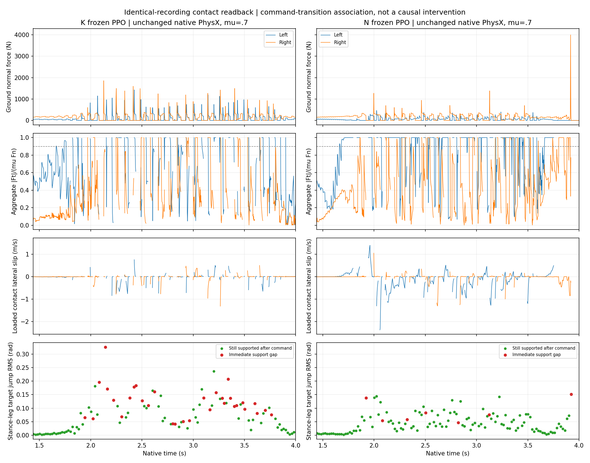

K and N frozen policies at μ=0.7. Extra native contact readback reproduced each existing trajectory byte for byte. No tire-law, material, actuator, reward or policy update was applied. These are additional observations of existing same-seed cases.
Support loss clusters immediately after control-command updates and is associated with larger stance-leg target changes. Body β and contact-point sliding differ. The following relationships are descriptive; they do not establish a causal mechanism.

Both columns use the same axes. Blue/orange: left/right wheel. Red control-update samples lose support in the first2.5 ms; green samples remain supported. Stance jump is the minimum RMS leg-target change among previously loaded wheels; the other leg may move freely.
| Policy | Core gap onsets | At first substep | Median body |β|(°) | Median wheel |α|(°) | Lateral slip + near friction limit |
|---|---|---|---|---|---|
| V2K | 33 | 32 | 17.09 | 3.539 | 10.81% |
| V2N | 9 | 7 | 15.74 | 4.825 | 29.14% |
The last column uses loaded wheel samples (normal force>5 N), contact lateral speed≥0.1 m/s and aggregate |Ft|/(μ Fn)≥0.9. It identifies neither a pointwise friction cone nor drift from force saturation alone. The native impulse/contact readback is aligned to the preceding state; the write counter names the upcoming step. Force absence is not inferred to be geometric flight.
Full event and command statistics · Recorded-data reproduction · N PPO negative comparison
python replay.py --repository /path/to/tron1-sliding-analysis --output-dir /tmp/new-contact-replay
The bundle contains numerical trajectories, contact data and source only. No actor/checkpoint weights, physical models, credentials or compiled rollout binaries are included. Replay reads the two recordings, recomputes their statistics and regenerates the plot; it performs no new physics or training. Overall task completion is not claimed.